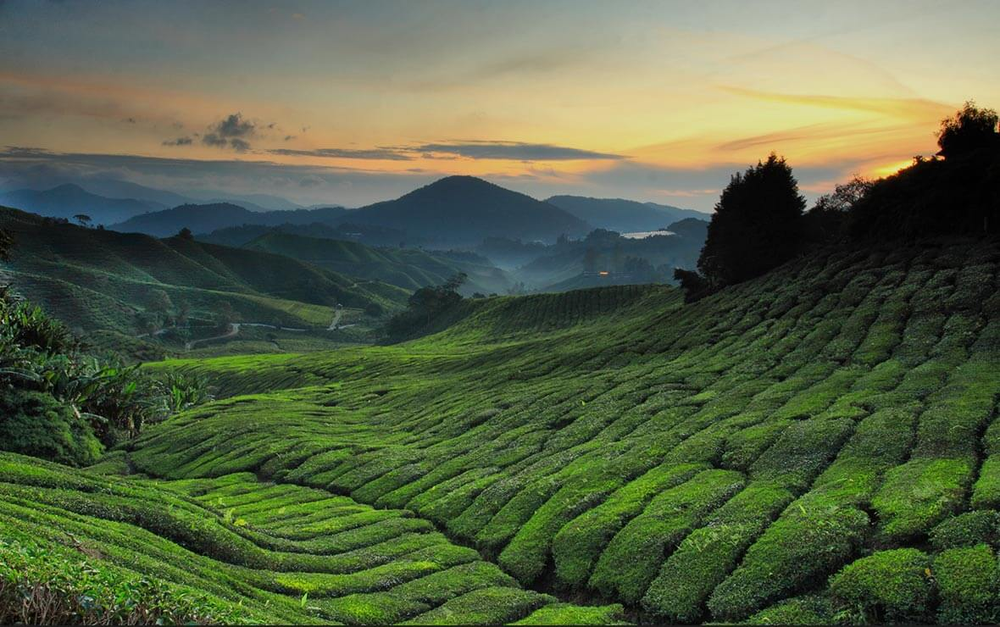
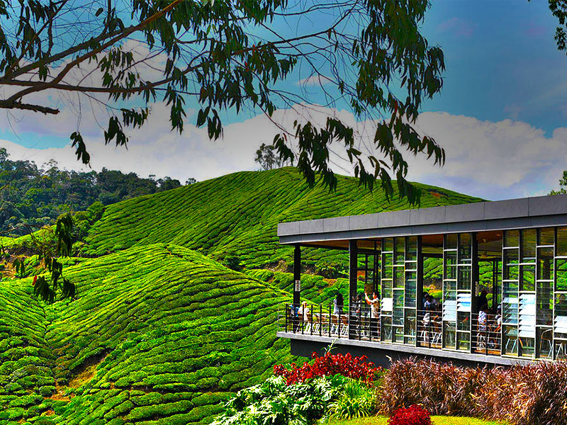

Explore Cameron Highlands
Cameron Highlands is a popular tourist destination due to its natural beauty and unique attractions.
It is a must-visit destination for nature lovers and adventure seekers planning to travel to South East Asia.
Cameron Highlands boasts an array of lush green landscapes, cool temperatures, and fertile soil, making it perfect for tea plantations and agricultural farm stays.
The best time to travel to Cameron Highlands is November because the average temperature is around 15°C to 23°C.


Why Visit?
From rolling tea plantations to misty forests, Cameron Highlands offers a refreshing retreat from city life.
Nestled in the mountains of Pahang, Malaysia, Cameron Highlands is a breathtaking destination known for its cool climate, lush tea plantations, and vibrant strawberry farms.
For more details, visit Tourism Malaysia or Contact Our Team.